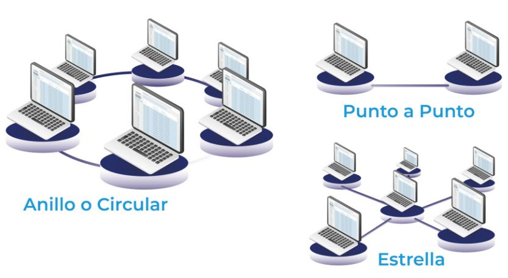

Red de ComputadorasUna red de computadoras es un conjunto de computadoras interconectadas que pueden compartir recursos y datos. Las redes pueden ser de diferentes tipos, como LAN, WAN, y MAN. |
Protocolos de RedLos protocolos son reglas que determinan cómo se comunican los dispositivos en una red. Ejemplos incluyen TCP/IP, HTTP y FTP. |
|  |
Topologías de RedLa topología de red se refiere a la disposición física o lógica de los nodos en una red. Las topologías comunes incluyen estrella, anillo y bus. |
Seguridad en RedesLa seguridad en redes implica proteger la integridad, confidencialidad y disponibilidad de los datos en una red. Esto incluye el uso de firewalls, antivirus y encriptación. |